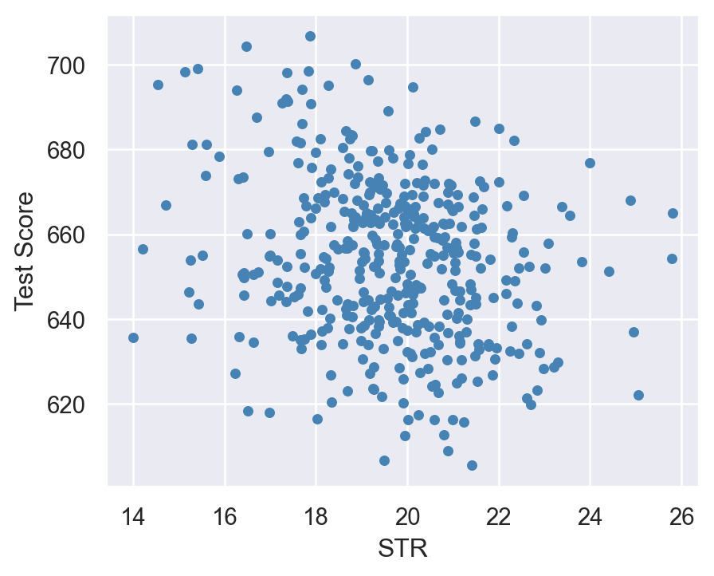
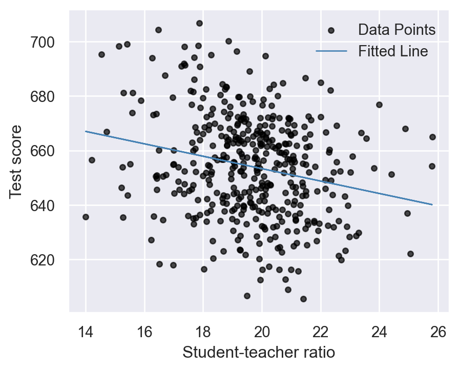
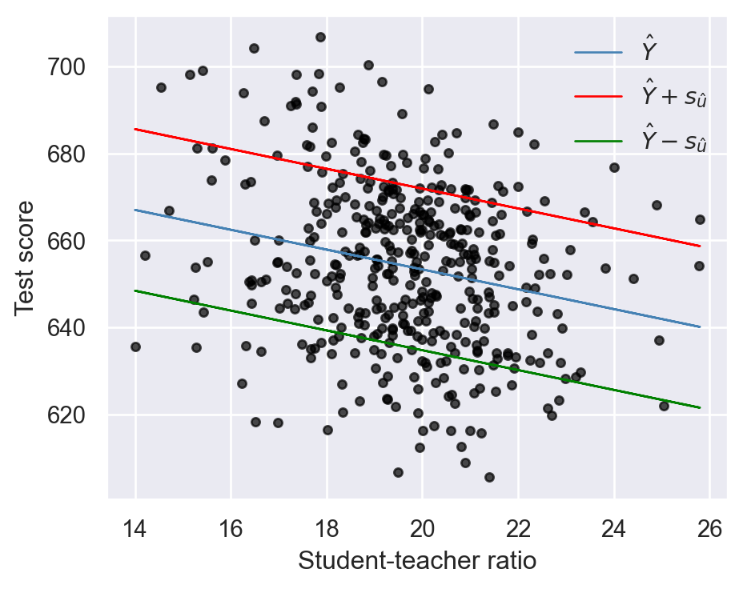
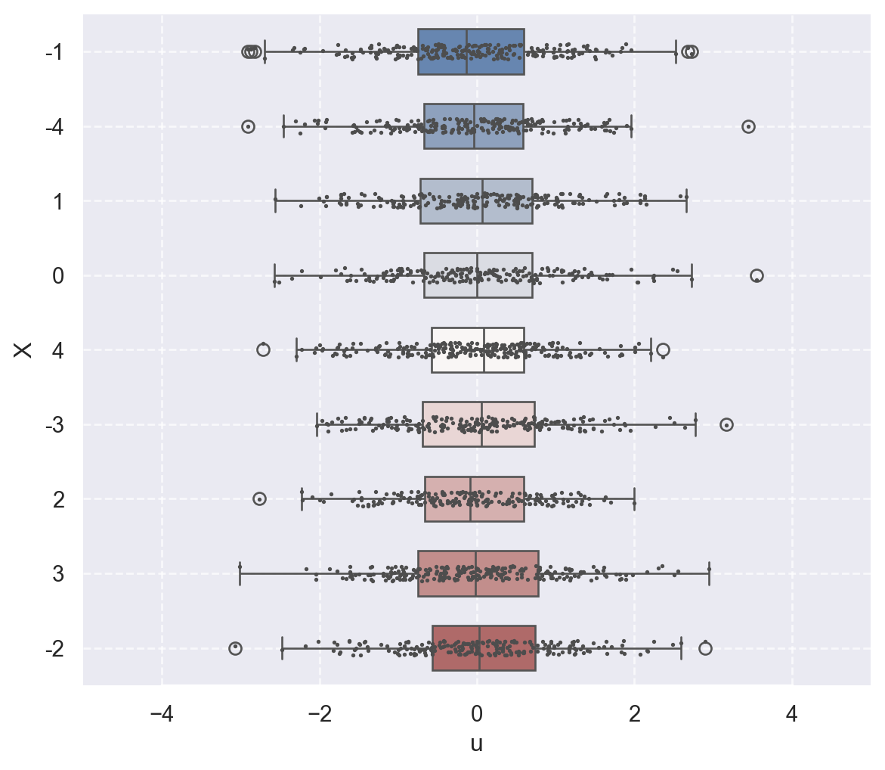
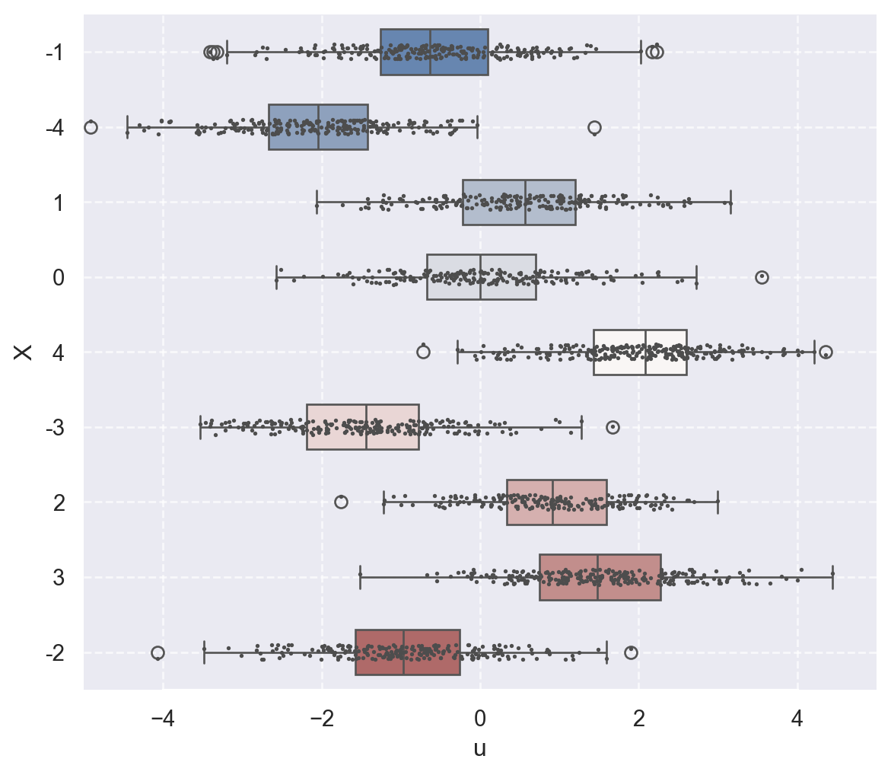
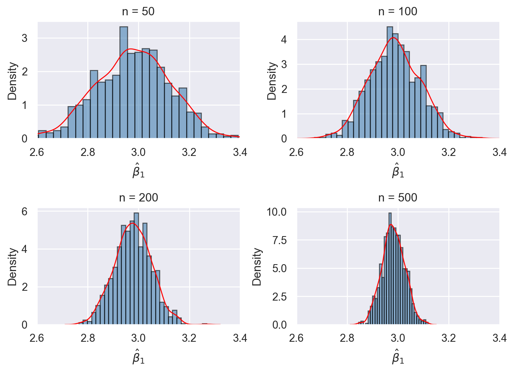

import numpy as np
import pandas as pd
import matplotlib.pyplot as plt
import seaborn as sns
import statsmodels.api as sm
import statsmodels.formula.api as smf13 Linear Regression with One Regressor
13.1 The linear regression model
We assume that we have a random sample \(\{(Y_i, X_i)\}_{i=1}^n\) on the random variables \((Y,X)\). Then, the linear regression model between \(Y\) and \(X\) is specified as \[ \begin{align} Y_i = \beta_0 + \beta_1 X_i + u_i, \quad i=1,\dots,n, \end{align} \tag{13.1}\] where
- \(Y_i\) is the outcome (or dependent) variable,
- \(X_i\) is the explanatory (or independent) variable,
- \(\beta_0\) and \(\beta_1\) are the coefficients (or parameters) of the model, and
- \(u_i\) is the error (or disturbance) term.
In Equation 13.1, under the assumption that \(\E(u_i|X_i)=0\), the conditional mean \(\E(Y_i|X_i)\) is a linear function of \(X_i\), i.e., \(\E(Y_i|X_i)=\beta_0 + \beta_1 X_i\). This conditional mean equation is called the population regression line or the population regression function and shows the average value of \(Y_i\) for a given \(X_i\). Thus, in the linear regression model, the error term \(u_i\) denotes the difference between \(Y_i\) and \(\E(Y_i|X_i)\), i.e., \(u_i=Y_i-\E(Y_i|X_i)\) for \(i=1,\dots,n\).
13.2 Estimating the coefficients of the linear regression model
We can estimate the parameters of the model using the ordinary least squares (OLS) estimator. The OLS estimators of \(\beta_0\) and \(\beta_1\) are the values of \(b_0\) and \(b_1\) that minimize the following objective function: \[ \begin{align} \sum_{i=1}^n \left(Y_i - b_0 - b_1 X_i \right)^2. \end{align} \] Using calculus, we can show the minimization of the objective function yields the following OLS estimators (see Appendix A for the detailed derivation): \[ \begin{align} &\hat{\beta}_1 = \frac{\sum_{i=1}^n(X_i - \bar{X})(Y_i - \bar{Y})}{\sum_{i=1}^n(X_i - \bar{X})^2} = \frac{s_{XY}}{s_X^2},\\ &\hat{\beta}_0 = \bar{Y} - \hat{\beta}_1\bar{X}, \end{align} \tag{13.2}\] where \(\bar{Y}\) and \(\bar{X}\) are the sample averages of \(Y\) and \(X\), respectively . The OLS predicted values \(\hat{Y}_i\) and residuals \(\hat{u}_i\) are \[ \begin{align} &\text{Predicted values}: \hat{Y}_i= \hat{\beta}_0 + \hat{\beta}_1 X_i \quad\text{for}\quad i =1,2,\dots,n,\\ &\text{Residuals}: \hat{u}_i = Y_i - \hat{Y}_i \quad\text{for}\quad i =1,2,\dots,n. \end{align} \]
Recall that we define the population regression function by \(\E(Y_i|X_i)=\beta_0 + \beta_1 X\). The estimated equation \(\hat{Y}_i= \hat{\beta}_0 + \hat{\beta}_1 X_i\) serves as an estimator of the population regression function. Thus, the predicted value \(\hat{Y}_i\) is an estimate of \(\E(Y_i|X_i)\) for \(i=1,\dots,n\).
There are three algebraic results that directly follow from the definition of the OLS estimators:
- The OLS residuals sum to zero: \(\sum_{i=1}^n \hat{u}_i = 0\).
- The OLS residuals and the explanatory variable are uncorrelated: \(\sum_{i=1}^n X_i\hat{u}_i = 0\).
- The regression line passes through the sample mean: \(\bar{Y} = \hat{\beta}_0 + \hat{\beta}_1 \bar{X}\).
These algebraic properties are proved in Section A.1. In Chapter 29, we extent these results to a multiple linear regression model.
13.3 Estimating the relationship between test scores and the student–teacher ratio
We consider the following regression model between test score (TestScore) and the student-teacher ratio (STR): \[ \begin{align} \text{TestScore}_i=\beta_0+\beta_1\text{STR}_i+u_i, \end{align} \tag{13.3}\] for \(i=1,2,\dots,n\).
13.3.1 Data
The data set is the California school district data set provided in the caschools.xlsx (caschools.csv) file. The data set is collected in 1999 on \(n=420\) school districts and includes observations on several district-level variables.
Test score is the average of the reading and math scores on a standardized test administered to fifth-grade students. This variable is denoted as
testscr.The student–teacher ratio is the number of students in the district divided by the number of full-time equivalent teachers. This variable is denoted as
str.
# Import data
CAschool=pd.read_csv('data/caschool.csv')
CAschool.columnsIndex(['Observation Number', 'dist_cod', 'county', 'district', 'gr_span',
'enrl_tot', 'teachers', 'calw_pct', 'meal_pct', 'computer', 'testscr',
'comp_stu', 'expn_stu', 'str', 'avginc', 'el_pct', 'read_scr',
'math_scr'],
dtype='object')We can use the describe method to get descriptive statistics of data. The summary statistics are presented in Table 13.1. Across 420 school districts, the average student-teacher ratio and the average test scores are around \(19.7\) and \(654.2\), respectively.
# Summary statistics
CAschool[["str", "testscr"]].round(3).describe().T| count | mean | std | min | 25% | 50% | 75% | max | |
|---|---|---|---|---|---|---|---|---|
| str | 420.0 | 19.640417 | 1.891805 | 14.00 | 18.5825 | 19.723 | 20.8720 | 25.80 |
| testscr | 420.0 | 654.156548 | 19.053348 | 605.55 | 640.0500 | 654.450 | 666.6625 | 706.75 |
In Figure 13.1, we provide the scatter plot of the test score and the student teacher ratio. The figure indicates a negative relationship between test score and student-teacher ratio. That is, as the student-teacher ratio increases, the test score tends to decrease.
# The scatter plot of test score and student-teacher ratio
sns.set(style='darkgrid')
fig,axs = plt.subplots(figsize=(5, 4))
axs.scatter(CAschool.str, CAschool.testscr, color="steelblue",s=15)
axs.set_xlabel('STR')
axs.set_ylabel("Test Score")
plt.show()
13.3.2 Estimation Results
We use the statsmodels.api and the statsmodels.formula.api modules to estimate regressions. We import these modules under the names sm and smf, respectively. There are two options for running OLS regressions: (i) the smf.ols() function and (ii) the sm.OLS() function. To see all available models that can be estimated by these functions, we can use dir(smf) and dir(sm).
In the case of smf, we can use R-style formulas to specify estimation equations. In the following, we use the smf.ols() function to estimate the model. Note that the estimation equation is specified as formula='testscr ~ str', where ~ symbol separates the dependent and independent variables.
# Specify the model
model1 = smf.ols(formula='testscr ~ str', data=CAschool)
# Use the fit function to obtain parameter estimates
result1 = model1.fit()
# Print the estimation results
print(result1.summary()) OLS Regression Results
==============================================================================
Dep. Variable: testscr R-squared: 0.051
Model: OLS Adj. R-squared: 0.049
Method: Least Squares F-statistic: 22.58
Date: Sat, 11 Oct 2025 Prob (F-statistic): 2.78e-06
Time: 11:45:28 Log-Likelihood: -1822.2
No. Observations: 420 AIC: 3648.
Df Residuals: 418 BIC: 3657.
Df Model: 1
Covariance Type: nonrobust
==============================================================================
coef std err t P>|t| [0.025 0.975]
------------------------------------------------------------------------------
Intercept 698.9330 9.467 73.825 0.000 680.323 717.543
str -2.2798 0.480 -4.751 0.000 -3.223 -1.337
==============================================================================
Omnibus: 5.390 Durbin-Watson: 0.129
Prob(Omnibus): 0.068 Jarque-Bera (JB): 3.589
Skew: -0.012 Prob(JB): 0.166
Kurtosis: 2.548 Cond. No. 207.
==============================================================================
Notes:
[1] Standard Errors assume that the covariance matrix of the errors is correctly specified.All estimated quantities are stored in the result1 object. We can use dir(result1) to see available attributes. In Table 13.2, we list some important attributes of the result1 object.
| Attribute | Description |
|---|---|
nobs |
returns the number of observations used in the estimation. |
params |
returns the estimated parameters in a list. |
resid |
returns the residuals in a list. |
predict |
returns predicted values in an array. |
model.exog |
returns exogenous variables in an array. |
model.exog_names |
returns the names of exogenous variables in a list. |
model.endog, model.endog_names |
returns the endogenous variable values/name. |
model.loglike |
returns the likelihood function evaluated at params. |
rsquared, rsquared_adj |
returns unadjusted/adjusted \(R^2\). |
Below, we illustrate some of these attributes.
# Number of observations
result1.nobs420.0# Estimated parameters
result1.paramsIntercept 698.932952
str -2.279808
dtype: float64# The first five residuals
result1.resid[0:5]0 32.652600
1 11.339167
2 -12.706887
3 -11.661981
4 -15.515925
dtype: float64# The first five predictions
result1.predict()[0:5]array([658.14738785, 649.86084512, 656.30686253, 659.36199297,
656.3659006 ])# The first five predictions
result1.fittedvalues[0:5]0 658.147388
1 649.860845
2 656.306863
3 659.361993
4 656.365901
dtype: float64Next, we describe how to use the sm.OLS() function for regression analysis. In this case, we need to supply the dependent and independent variable(s) as arrays through the endog and exog arguments, respectively.
# Arrange the data
CAschool["const"] = 1 # add a constant column
# Define the dependent and independent variables
y = CAschool.testscr
X = CAschool[["const", "str"]]Note that we need to explicitly specify the intercept term: CAschool["const"] = 1, which adds a column of ones to the dataframe CAschool.
# Specify the model
model2 = sm.OLS(endog=y, exog=X)
# Fit the model
result2 = model2.fit()
# Print estimation results
print(result2.summary()) OLS Regression Results
==============================================================================
Dep. Variable: testscr R-squared: 0.051
Model: OLS Adj. R-squared: 0.049
Method: Least Squares F-statistic: 22.58
Date: Sat, 11 Oct 2025 Prob (F-statistic): 2.78e-06
Time: 11:45:28 Log-Likelihood: -1822.2
No. Observations: 420 AIC: 3648.
Df Residuals: 418 BIC: 3657.
Df Model: 1
Covariance Type: nonrobust
==============================================================================
coef std err t P>|t| [0.025 0.975]
------------------------------------------------------------------------------
const 698.9330 9.467 73.825 0.000 680.323 717.543
str -2.2798 0.480 -4.751 0.000 -3.223 -1.337
==============================================================================
Omnibus: 5.390 Durbin-Watson: 0.129
Prob(Omnibus): 0.068 Jarque-Bera (JB): 3.589
Skew: -0.012 Prob(JB): 0.166
Kurtosis: 2.548 Cond. No. 207.
==============================================================================
Notes:
[1] Standard Errors assume that the covariance matrix of the errors is correctly specified.The estimated regression model can be written as \[ \begin{aligned} \widehat{TestScore} & = 698.93 - 2.28 \times STR. \end{aligned} \]
According to the estimated model, if str increases by one then on average test score decline by 2.28 points. Figure 13.2 shows the scatterplot between the test score and the student-teacher ratio along with the estimated regression function.
fig, ax = plt.subplots(figsize=(5, 4))
# Scatter plot of the data points
ax.scatter(CAschool['str'], CAschool['testscr'], color='black', label='Data Points', alpha=0.7, s=15)
# Plot the fitted regression line
ax.plot(CAschool['str'], result1.fittedvalues, color='steelblue', label='Fitted Line', linewidth=1)
# Set labels
ax.set_xlabel('Student-teacher ratio')
ax.set_ylabel('Test score')
# Show legend
ax.legend(frameon=False)
# Display the plot
plt.show()
13.4 Measures of fit and prediction accuracy
We will use two measures of fit: (i) the \(R^2\) measure and (ii) the standard error of the regression (SER). The regression \(R^2\) is the fraction of the sample variance of \(Y\) explained by \(X\). It is defined by \[ \begin{align*} R^2 &= \frac{ESS}{TSS} = \frac{\sum_{i=1}^n\left(\hat{Y}_i - \bar{\hat{Y}}\right)^2}{\sum_{i=1}^n\left(Y_i - \bar{Y}\right)^2} = 1 - \frac{\sum_{i=1}^n\hat{u}_i^2}{\sum_{i=1}^n\left(Y_i - \bar{Y}\right)^2} = 1 - \frac{SSR}{TSS}, \end{align*} \]
where
- \(ESS=\sum_{i=1}^n\left(\hat{Y}_i - \bar{\hat{Y}}\right)^2\) is the explained sum of squares,
- \(TSS=\sum_{i=1}^n\left(Y_i - \bar{Y}\right)^2\) is the total sum of squares, and
- \(SSR=\sum_{i=1}^n\hat{u}_i^2\) is the sum of squared residuals.
The SER is an estimator of the standard deviation of the regression error terms: \[ \begin{align*} SER &= s_{\hat{u}} = \sqrt{\frac{1}{n-2}\sum_{i=1}^n\left(\hat{u}_i - \bar{\hat{u}}\right)^2} =\sqrt{\frac{1}{n-2}\sum_{i=1}^n\hat{u}_i^2}=\sqrt{\frac{SSR}{n-2}} \end{align*} \] where the fourth equality is due to \(\sum_{i=1}^n \hat{u}_i = 0\), which means \(\bar{\hat{u}} = 0\). The SER has the same units as \(𝑌\) and measures the spread of the observations around the regression line.
The \(R^2\) ranges between \(0\) and \(1\), and a high value of \(R^2\) indicates that the model explains a large fraction of the variation in \(Y\). The SER is always non-negative, and a smaller value indicates that the model fits the data better.
In the following code chunk, we compute both measures of fit for the test score regression in Equation 13.3. The estimates are given in Table 13.3. The \(R^2=0.05\) means that the STR regressor explains \(5\%\) of the variance of the dependent variable TestScore. The SER estimate is \(18.6\), providing an estimate of the standard deviation of the error terms in units of test score points.
# Measures of fit
y = CAschool.testscr
n = result1.nobs
R2 = 1 - (np.sum(result1.resid**2) / (np.sum((y-np.mean(y))**2)))
SER = np.sqrt(np.sum(result1.resid**2) / (n-2))
fit_measures = pd.DataFrame([R2,SER])
fit_measures.index = ["R^2", "SER"]
fit_measures.columns = [""]# Print measures
fit_measures.round(2)| R^2 | 0.05 |
| SER | 18.58 |
In the above code chunk, we use the expressions for \(R^2\) and \(SER\) to compute these measures. Alternatively, we can use the result1.rsquared method for returning \(R^2\) and result1.mse_resid for returning \(s^2_{\hat{u}}\).
Recall that the predicted value for the \(i\)th outcome variable is defined as \(\hat{Y}_i = \hat{\beta}_0 + \hat{\beta}_1 X_i\). These predicted values are referred to as in-sample predictions when computed from the \(X_i\) values already used in the OLS estimation. If we use \(X_i\) values that are not in the estimation sample, the prediction is referred to as an out-of-sample prediction. In either case, the prediction error is given by \(Y_i - \hat{Y}_i\). For the standard deviation of both in-sample and out-of-sample prediction errors, we can use \(s_{\hat{u}}\). Thus, a model will produce relatively accurate predictions if it has a relatively smaller \(s_{\hat{u}}\). Therefore, we usually report \(\hat{Y}_i \pm s_{\hat{u}}\) along with the predicted value \(\hat{Y}_i\). For the test score regression in Equation 13.3, we provide the plots of the predicted values along with those of \(\hat{Y}_i \pm s_{\hat{u}}\) in Figure 13.3.
# The in-sample predicted values
# Create the figure and axis
fig, ax = plt.subplots(figsize=(5, 4))
# Scatter plot of the data points
ax.scatter(CAschool['str'], CAschool['testscr'], color='black', alpha=0.7, s=15)
# Plot the fitted regression line
ax.plot(CAschool['str'], result1.fittedvalues, color='steelblue', label= r'$\hat{Y}$', linewidth=1)
# Compute the upper and lower bounds based on mse_resid
upper_bound = result1.fittedvalues + np.sqrt(result1.mse_resid)
lower_bound = result1.fittedvalues - np.sqrt(result1.mse_resid)
# Plot the two additional lines
ax.plot(CAschool['str'], upper_bound, color='red', linestyle='-', label= r'$\hat{Y}+s_{\hat{u}}$', linewidth=1)
ax.plot(CAschool['str'], lower_bound, color='green', linestyle='-', label= r'$\hat{Y}-s_{\hat{u}}$', linewidth=1)
# Set labels and title
ax.set_xlabel('Student-teacher ratio', fontsize=12)
ax.set_ylabel('Test score', fontsize=12)
# Show legend
ax.legend(frameon=False)
# Display the plot
plt.tight_layout() # Ensure everything fits well in the figure
plt.show()
13.5 The least squares assumptions for causal inference
In this section, we provide the least square assumptions. These assumptions ensure two important results. First, under these assumptions, we can interpret the slope parameter \(\beta_1\) as the causal effect of \(X\) on \(Y\). Second, these assumptions ensure that the OLS estimator has large sample properties, namely consistency and asymptotic normal distributions. We list these assumptions below.
The first assumption has important implications. First of all, it suggests that \(\E(u_i)=\E(\E(u_i|X_i))=0\), where we use the law of iterated expectations. Second, we can show that \[ \E(u_i |X_i) = 0\implies \corr(X,u_i)=0, \] where the last equality again follows from the law of iterated expectations. Then, the contrapositive of this statement gives the following useful result: \[ \corr(X,u_i)\ne 0\implies \E(u_i |X_i)\ne 0. \] This last result is important because it provides a way to check the plausibility of the zero-conditional mean assumption. If we think that the error term \(u_i\) is likely to include a variable that is correlated with the regressor \(X_i\), then we can claim that \(\E(u_i |X_i)\ne 0\).
In the following code chunk, we consider two data-generating processes to illustrate the zero-conditional mean assumption. We assume that the zero-conditional mean assumption holds in the first process but is violated in the second. In both cases, we assume that \(X\) takes integer values between \(-4\) and \(4\): x_values = np.random.randint(low=-4, high=5, size=size). In the first process, we generate the error terms independently from the standard normal distribution, i.e., \(u \sim N(0, 1)\). In this case, since \(u\) is independent of \(X\), we have \(\E(u|X)=\E(u)=0\). In contrast, in the second process, we generate the error terms according to \(u \sim N(0.5X, 1)\) so that \(\E(u|X)=0.5X\).
In Figure 13.4, we use boxplots to present the distribution of \(u\) against \(X\). In Figure 13.4 (a), the conditional mean of \(u\) remains close to zero across all values of \(X\). Thus, in this case, \(\E(u|X)=0\) holds. On the other hand, Figure 13.4 (b) shows that the mean of \(u\) varies with \(X\), indicating that \(\E(u|X)\) depends on \(X\).
# Illustrating the zero-conditional mean assumption
def generate_data(seed, size, zero_conditional_mean=True):
"""
Generates a DataFrame based on whether zero-conditional mean assumption holds.
Parameters:
- seed (int): Random seed for reproducibility.
- size (int): Number of observations.
- zero_conditional_mean (bool): Flag to determine if zero-conditional mean assumption holds.
Returns:
- pd.DataFrame: DataFrame containing 'x' and 'u'.
"""
np.random.seed(seed)
x_values = np.random.randint(low=-4, high=5, size=size)
if zero_conditional_mean:
u_values = np.random.normal(size=size)
else:
u_values = np.random.normal(size=size) + 0.5 * x_values
df = pd.DataFrame({
'x': x_values.astype(str),
'u': u_values
})
return df
def plot_boxplot(df, title):
"""
Plots a boxplot with overlayed stripplot.
Parameters:
- df (pd.DataFrame): DataFrame containing 'x' and 'u'.
- title (str): Title for the plot.
"""
plt.figure(figsize=(7, 6))
# Plot the boxplot with horizontal boxes
sns.boxplot(data=df, x="u", y="x", hue="x", width=0.6, palette="vlag")
# Add points to show each observation
sns.stripplot(data=df, x="u", y="x", size=2, color=".3", jitter=True)
# Tweak the visual presentation
#plt.title(title)
plt.xlabel('u')
plt.ylabel('X')
plt.xlim(-5, 5) # Adjust limits if necessary
plt.grid(True, linestyle='--', alpha=0.7)
sns.despine(trim=True, left=True)
plt.show()
# Generate data
df1 = generate_data(seed=45, size=2000, zero_conditional_mean=True)
df2 = generate_data(seed=45, size=2000, zero_conditional_mean=False)
# Plot
plot_boxplot(df1, title="Zero-Conditional Mean Assumption Holds")
plot_boxplot(df2, title="Zero-Conditional Mean Assumption Does Not Hold")

The second assumption requires a random sample on \(X\) and \(Y\). This assumption generally holds because data are usually collected on a randomly selected sample from the population of interest.
The final assumption requires that \(X\) and \(Y\) cannot take large values. We need this assumption because the OLS estimator is sensitive to large values in the data set. This assumption is stated in terms of the fourth moments of \(X\) and \(Y\), and is also used to establish the asymptotic normality of the OLS estimators, as shown in Chapter 29.
13.6 The sampling distribution of the OLS estimators
We first show that the OLS estimators given in Equation 13.2 are unbiased estimators. From \(Y_i=\beta_0+\beta_1X_i+u_i\) and \(\bar{Y}=\beta_0+\beta_1\bar{X}+\bar{u}\), we obtain \[ \begin{align} Y_i-\bar{Y}=\beta_1(X_i-\bar{X})+(u_i-\bar{u}). \end{align} \tag{13.4}\]
Then, substituting Equation 13.4 into Equation 13.2 yields \[ \begin{aligned} \hat{\beta}_1 &= \frac{\sum_{i=1}^n(X_i - \bar{X})(Y_i - \bar{Y})}{\sum_{i=1}^n(X_i - \bar{X})^2} =\frac{\sum_{i=1}^n(X_i - \bar{X})\left(\beta_1(X_i-\bar{X})+(u_i-\bar{u})\right)}{\sum_{i=1}^n(X_i - \bar{X})^2}\\ &=\beta_1+\frac{\sum_{i=1}^n(X_i - \bar{X})(u_i-\bar{u})}{\sum_{i=1}^n(X_i - \bar{X})^2}. \end{aligned} \tag{13.5}\]
Since \(\sum_{i=1}^n(X_i - \bar{X})(u_i-\bar{u})=\sum_{i=1}^n(X_i-\bar{X})u_i\), we obtain \[ \begin{align} \hat{\beta}_1=\beta_1+\frac{\sum_{i=1}^n(X_i - \bar{X})u_i}{\sum_{i=1}^n(X_i - \bar{X})^2}. \end{align} \tag{13.6}\]
We can use Equation 13.6 to determine \(\E(\hat{\beta}_1|X_1,\dots,X_n)\):
\[ \begin{align} \E(\hat{\beta}_1|X_1,\dots,X_n) &= \beta_1+\E\left(\frac{\sum_{i=1}^n(X_i - \bar{X})u_i}{\sum_{i=1}^n(X_i - \bar{X})^2}\bigg|X_1,\dots,X_n\right)\nonumber\\ &= \beta_1+\frac{\sum_{i=1}^n(X_i - \bar{X})\E\left(u_i|X_1,\dots,X_n\right)}{\sum_{i=1}^n(X_i - \bar{X})^2}. \end{align} \]
Under Assumptions 1 and 2, we have \(\E\left(u_i|X_1,\dots,X_n\right)=\E(u_i|X_i)=0\), suggesting that \(\E(\hat{\beta}_1|X_1,\dots,X_n)=\beta_1\). Finally, the unbiasedness of \(\hat{\beta}_1\) follows from the law of iterated expectations: \[ \begin{align} \E(\hat{\beta}_1) = \E\left(\E\left(\hat{\beta}_1|X_1,\dots,X_n\right)\right) = \E(\beta_1)=\beta_1. \end{align} \]
Similarly, for \(\hat{\beta}_0\), we have \[ \begin{align} \E(\hat{\beta}_0|X_1,\dots,X_n) &= \E(\bar{Y} - \hat{\beta}_1\bar{X}|X_1,\dots,X_n)\\ &= \E(\bar{Y}|X_1,\dots,X_n)-\bar{X}\E(\hat{\beta}_1|X_1,\dots,X_n)\\ &= \beta_0+\bar{X}\beta_1-\bar{X}\beta_1=\beta_0. \end{align} \]
where the third equality follows from \(\E(\bar{Y}|X_1,\dots,X_n)=\beta_0+\bar{X}\beta_1\). Then, it follows from the law of iterated expectations that \[ \begin{align} \E(\hat{\beta}_0) = \E\left(\E\left(\hat{\beta}_0|X_1,\dots,X_n\right)\right) = \E(\beta_0)=\beta_0. \end{align} \] Let \(\mu_X\) and \(\sigma^2_X\) be the population mean and variance of \(X\). In the following theorem, we show the asymptotic distributions of the OLS estimators.
Theorem 13.1 (Asymptotic distributions of the OLS estimators) Under the least squares assumptions, we have \(\E(\hat{\beta}_0) = \beta_0\) and \(\E(\hat{\beta}_1) = \beta_1\), i.e, the OLS estimators are unbiased. In large samples, \(\hat{\beta}_0\) and \(\hat{\beta}_1\) have a joint normal distribution. Specifically, \[ \begin{align*} &\hat{\beta}_1 \stackrel{A}{\sim} N\left(\beta_1, \sigma^2_{\hat{\beta}_1}\right),\,\text{where}\quad\sigma^2_{\hat{\beta}_1} = \frac{1}{n}\frac{\var\left((X_i - \mu_X)u_i\right)}{\left(\sigma^2_X\right)^2},\\ &\hat{\beta}_0 \stackrel{A}{\sim} N\left(\beta_0, \sigma^2_{\hat{\beta}_0}\right),\, \text{where}\quad\sigma^2_{\hat{\beta}_0} = \frac{1}{n}\frac{\var\left(H_i u_i\right)}{\left(\E(H_i^2)\right)^2}\,\,\text{and}\,\, H_i = 1 - \frac{\mu_X}{\E(X_i^2)}X_i. \end{align*} \]
We prove Theorem 13.1 in Chapter 27. There are three important observations from Theorem 13.1:
- The OLS estimators are unbiased.
- The variance of the OLS estimators are inversely proportional to the sample size \(n\).
- The sampling distributions of the OLS estimators are approximated by the normal distributions when the sample size is large.
We investigate the properties of the OLS estimators in the simulation setting given in the following code chunk. We assume that the population regression model is given by \(Y_i=\beta_0+X_i\beta_1+u_i\), where \(\beta_0=1.5\), \(\beta_1=3\), \(X_i\sim N(0,1)\), and \(u_i\sim N(0,1)\). We first assume that the population size is \(N=5000\) and then generate the population data. We consider four sample size with \(n\in \{50, 100, 200, 500\}\). For each sample size, we generate \(1000\) samples from the population and estimate the model with each sample. Thus, we obtain \(1000\) estimates of \(\beta_0\) and \(\beta_1\) for each sample size. We then construct the histograms of these estimates along with the kernel density plots. The simulation results are shown in Figure 13.5.
Each histogram and kernel density plot in Figure 13.5 is centered around the true value \(\beta_1=3\), indicating that the OLS estimator \(\hat{\beta}_1\) is unbiased. The shape of the histograms and kernel density plots are bell-shaped, suggesting that the sampling distribution of the OLS estimator \(\hat{\beta}_1\) resembles the normal distribution. We also observe that the variance of the OLS estimator decreases as \(n\) increases from \(50\) to \(500\). All of these observations are consistent with Theorem 13.1.
# Properties of the OLS estimators
# Set seed for reproducibility
np.random.seed(45)
# Set number repetitions a
reps = 1000
# Set sample sizes
n = [50, 100, 200, 500]
# Population regression model
N = 5000
X = np.random.normal(size=N)
Y = 1.5 + 3 * X + np.random.normal(size=N)
population = pd.DataFrame({'X': X, 'Y': Y})
# Initialize the matrix of outcomes
fit = np.zeros((reps, 2))
# Set up the plot with 2x2 subplots
fig, axs = plt.subplots(2, 2, figsize=(7.5, 5.5))
axs = axs.flatten()
# Outer loop: sampling and plotting
for j, size in enumerate(n):
# Inner loop: sampling and estimating the coefficients
for i in range(reps):
sample = population.sample(size, replace=True) # Sample with replacement
model = smf.ols('Y ~ X', data=sample).fit()
fit[i, :] = model.params
# Draw histogram
axs[j].hist(fit[:, 1], bins=30, density=True, alpha=0.6,
color="steelblue", edgecolor='black')
# Draw density estimates
sns.kdeplot(fit[:, 1], ax=axs[j], color="red", fill=False, linewidth=1)
# Set the plot titles and labels
axs[j].set_xlim(2.6, 3.40)
axs[j].set_title(f"n = {size}")
axs[j].set_xlabel(r'$\hat{\beta}_1$')
# Adjust layout and show the plot
plt.tight_layout()
plt.show()
In the next chapter, we will show how to formulate estimators for \(\sigma^2_{\hat{\beta}_1}\) and \(\sigma^2_{\hat{\beta}_0}\) given in Theorem 13.1. We will also show how to use these estimators to conduct hypothesis tests and construct confidence intervals for the parameters \(\beta_0\) and \(\beta_1\).